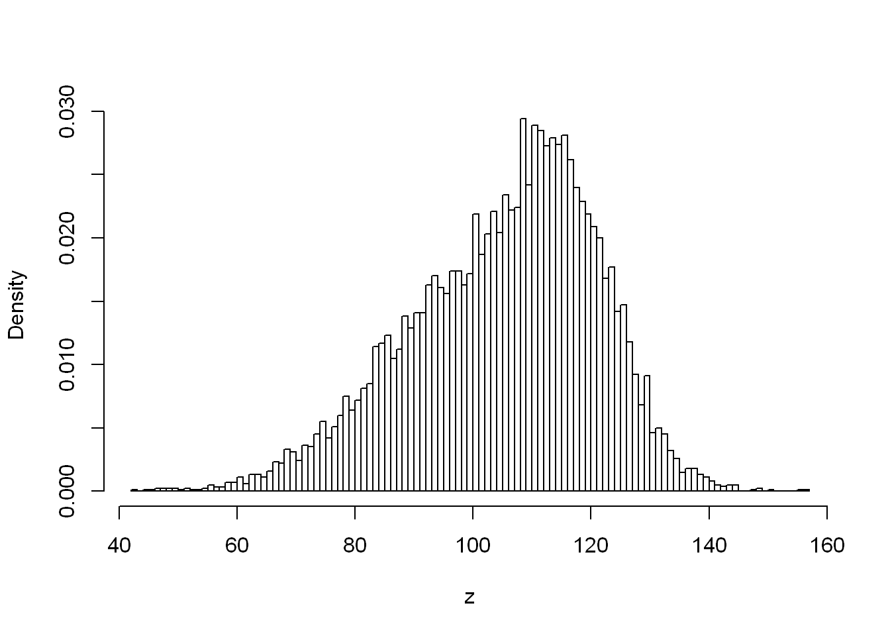
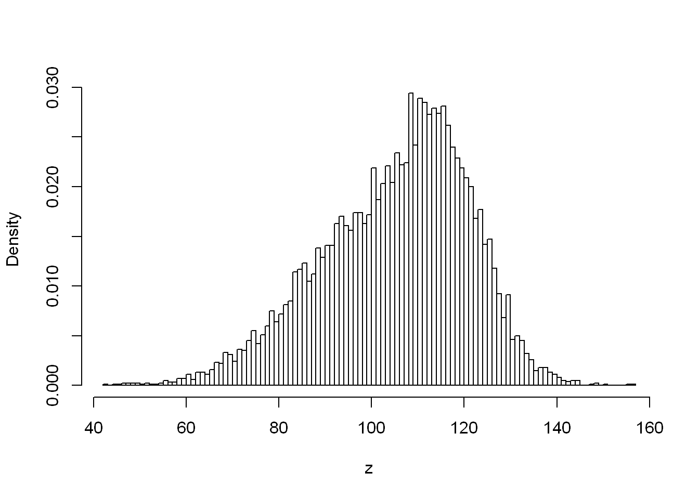

n <- 10000
z <- ifelse(runif(n) <= (2/3), rnorm(n , 100, 16), rnorm(n, 116, 8))
hist(z, breaks = 101, probability = TRUE, main = "", col = "white")
Assuming that a, b, and c are numeric vectors, simplify the following expressions:
!(b>a & b<c),
One of the sub-conditions has to be FALSE for the result to be TRUE:
!b>a | !b<c
!(a>=b & b>=c & a>=c),
Same again:
!a>=b | !b>=c | !a>=c
a>b & a<c | a<c & a>d,
I think I complicated rather than simplified, but:
a<c & (a<b | a>d)
a>b | a<=b,
Uhh, TRUE?
a<=b & a>c | a>b & a<=c,
Hmm, not sure this one can be simplified.
a<=b & (a>c | a>b) & a<=c,
a is less than or equal to b AND less than or equal to c, but must be greater than at least one of b OR c, so always: FALSE.
!all(a > b & b < c).
If all(p) is equivalent to !any(!p) then isn’t !all(p) equal to any(!p)?
any(!a>b | !b<c)
ifelse() to generate Guassian mixtureswe generated a variate from the normal distribution that has the expected value of −2 with probability 20%, and from the one with the expectation of 3 otherwise. Thus inspired, generate the Gaussian mixtures:
\(\frac{2}{3}X + \frac{1}{3}Y\), where \(X ~ N(100, 16)\) and \(Y ~ N(116, 8)\)
n <- 10000
z <- ifelse(runif(n) <= (2/3), rnorm(n , 100, 16), rnorm(n, 116, 8))
hist(z, breaks = 101, probability = TRUE, main = "", col = "white")
\(0.3X + 0.4Y + 0.3Z\), where \(X\) ~ \(N(-10, 2)\), \(Y\) ~ \(N(0,2)\), and $Z $ ~ \(N(10,2)\)
Answer the following questions.
Why the statement “The Earth is flat or the smallpox vaccine is proven effective” is obviously true?
Because at least one of those two statements is true, which is all you need with an OR.
What is the difference between
NAandNA_real_?
NA is of type logical wheras NA_real_ is of type numeric, i.e. they indicate a missing value within those respective vector types.
Why is “FALSE & NA” equal to FALSE, but “TRUE & NA” is NA?
As long as one side of an & is FALSE, the expression will evaluate to FALSE. With “TRUE & NA” the expression could evaluate to either TRUE or FALSE depending on what the NA value is.
Why has ifelse(x>=0, sqrt(x), NA_real_) a tendency to generate warnings and how to rewrite it so as to prevent that from happening?
What is the interpretation of
mean(x >= 0 & x <= 1)?
This calculates the proportion of vector x which lies between 0 and 1. mean coerces the logical result of the expression to numeric i.e. TRUE to 1 and FALSE to 0.
For some integer x and y, how to verify whether 0<x<100, 0<y<100, and x<y, all at the same time?
0<x & x<y & y<100
Mathematically, for all real \(x,y>0\), we have \(logxy=logx+logy\). Why then
all(log(x*y) == log(x)+log(y))can sometimes returnFALSE? How to fix this?
Differences can occur in the results due to over or under accuracy in calculations using the double-precision floating point system.
Is x/y/z always equal to x/(y/z)? How to fix this?
Clearly not as a result of order of operations. I’m not sure what is meant by fixing this.
What is the purpose of very specific functions such as log1p and expm1 (see their help page) and many others listed in, e.g., the GNU GSL library [28]? Is our referring to them a violation of the beloved “do not multiply entities without necessity” rule?
If we know that x may be subject to error, how to test whether x>0 in a robust manner?
We can for instance use abs(x - 0) < e-8 to check for within an assumed error margin or more simply round round(x) > 0).
Is “y<-5” the same as “y <- 5” or rather “y < -5”?
It’s the same as the former, evaluated as assignment rather than less than negative 5.
What is the difference between
allandisTRUE? What about==,identical, andall.equal? Is the last one properly vectorised?
all checks if every element of a vector is TRUE, including coercion to TRUE, and isTRUE checks if the value passed to it is equal to the value TRUE.
[1] TRUE[1] FALSE== checks for equality between each respective element of two vectors, return a result for each pair. identical checks if two objects are exactly equal, a single result for whether the entire thing is the same. all.equal() is similar to identical, but instead tests for near equality.